게시판
사유록 가을 출사로그
명륜당
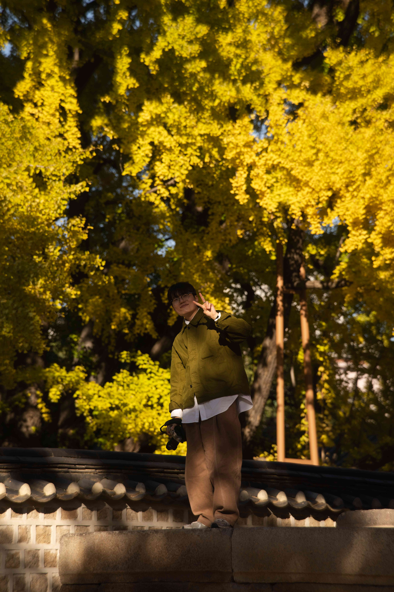
안녕하세요, 어민규입니다!
이번 4년만에 명륜당이 열린다고 해서 은행나무를 보러 왔어요.
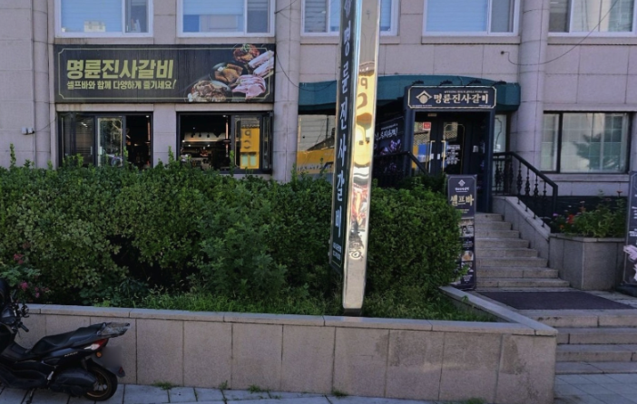
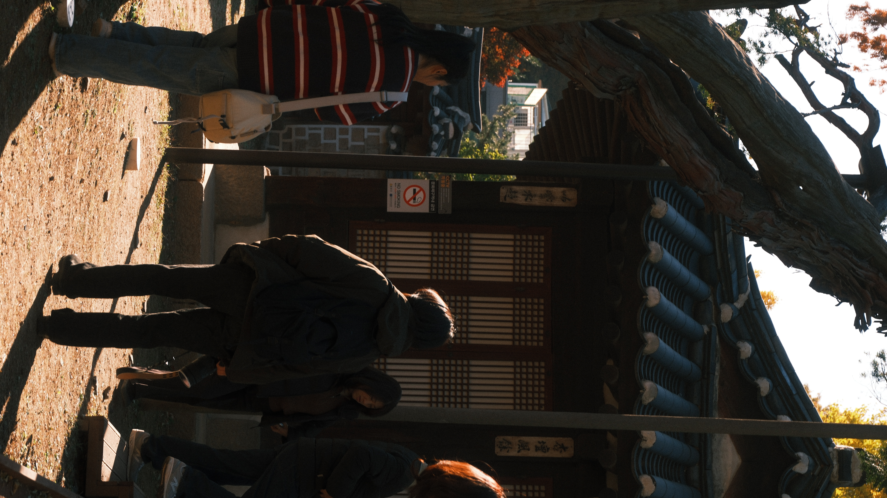
명륜당의 메인 포토스팟에서부터 오늘 일정 시작
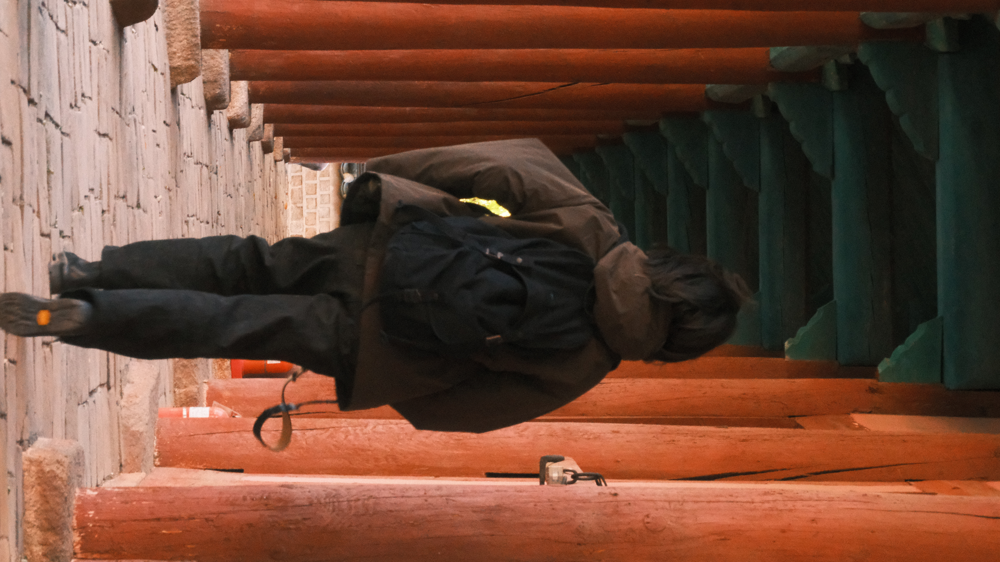
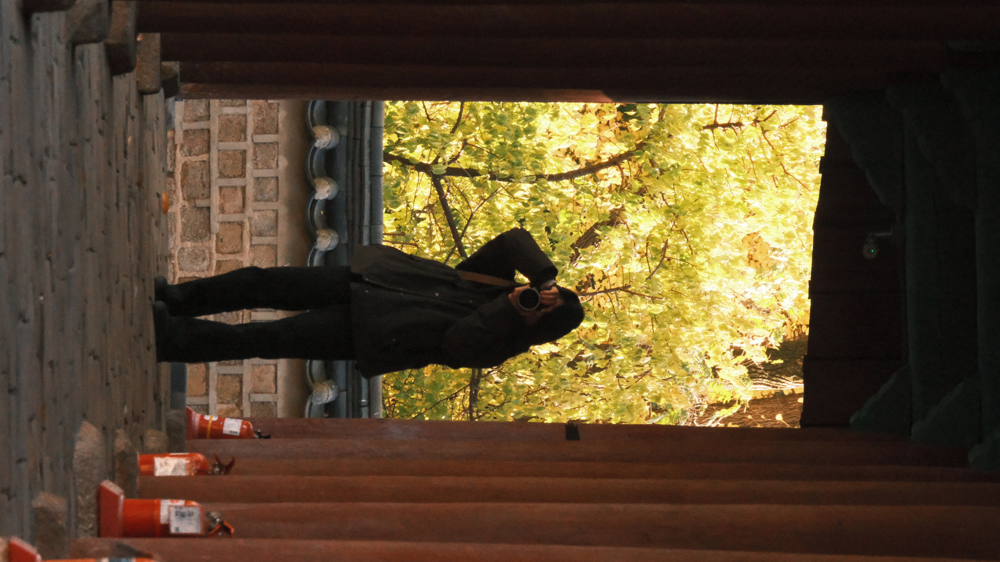
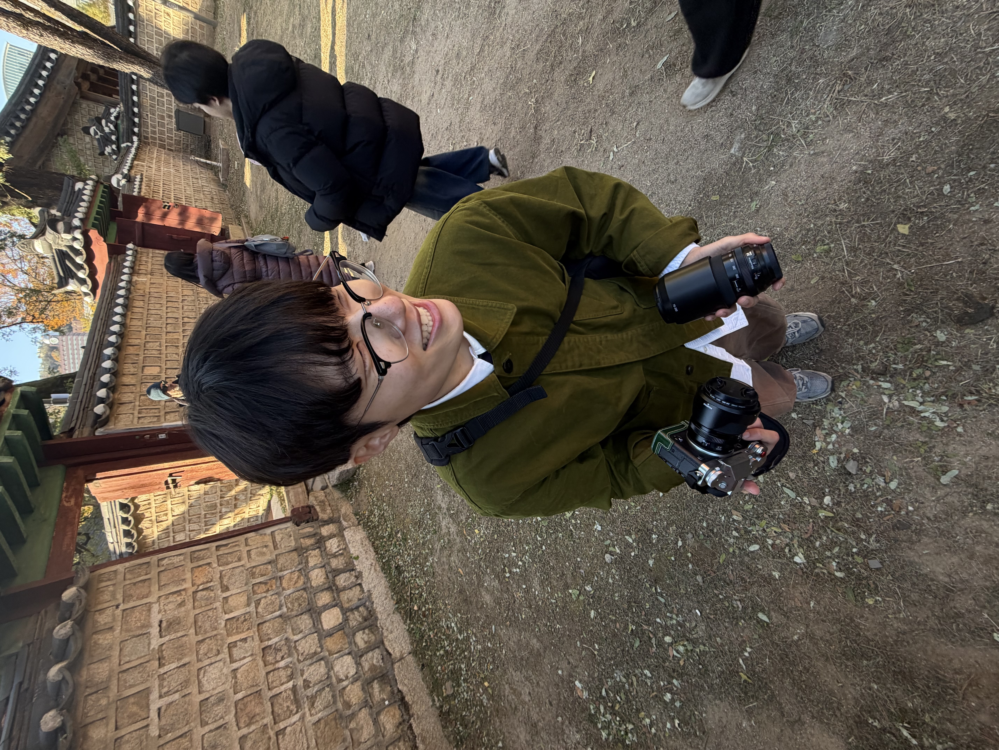
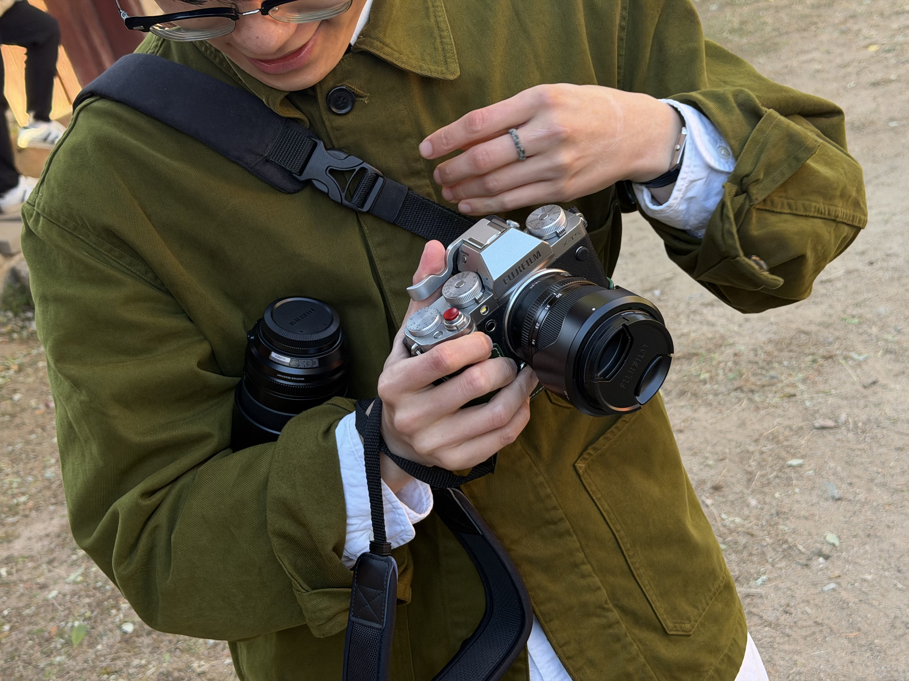
커피가게 디터틀
서인이가 찾은 카페에 왔어요.
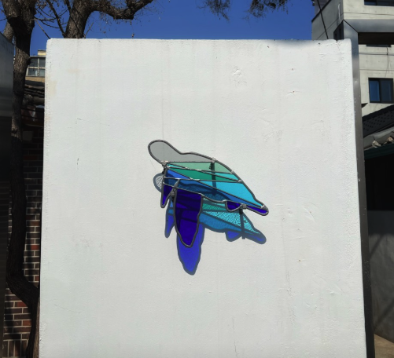
저는 얼죽아라, 아아를 마셨는데
얼어죽기 직전에 실내에 들어가서 살았다.

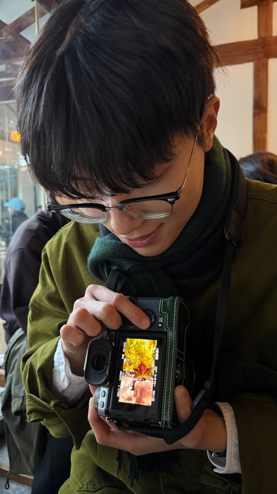
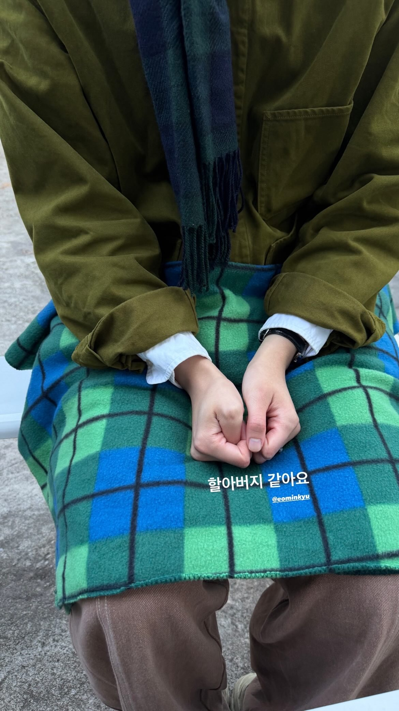
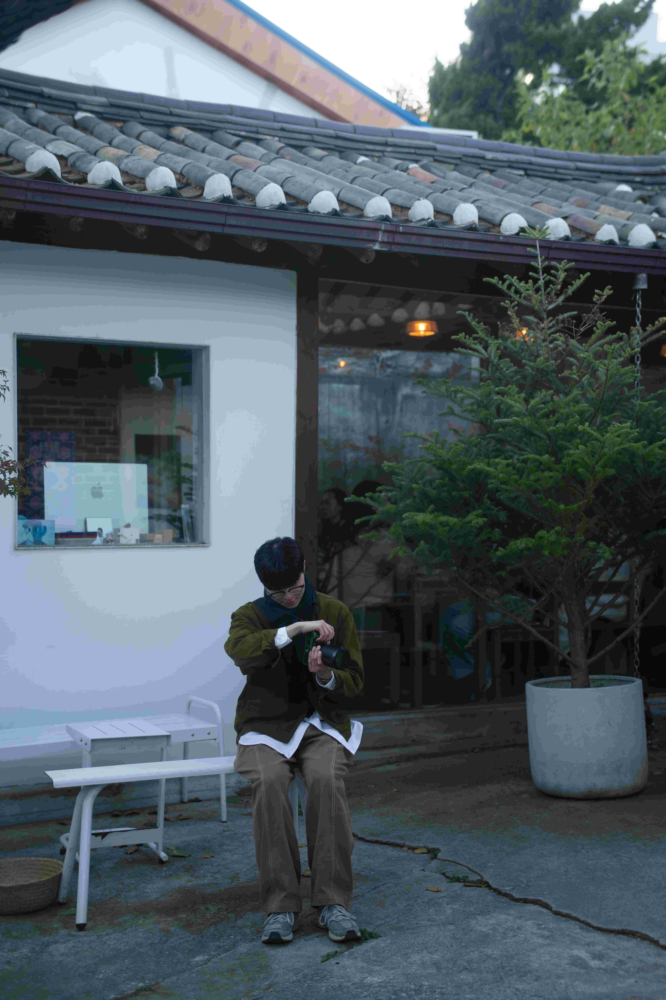
효자로
다음으로 효자로를 갔는데 집회 중이라 차가 많이 막혔는데
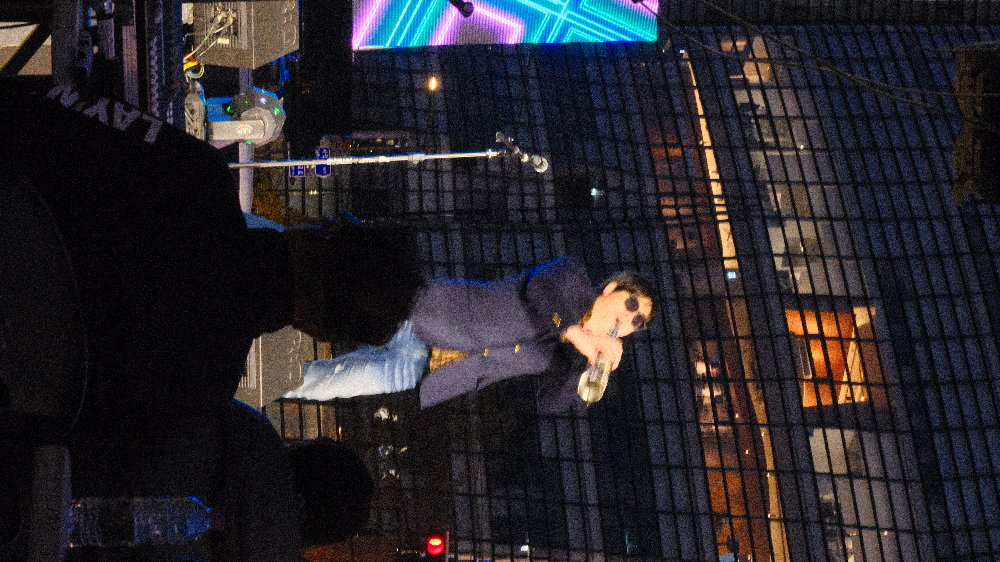
날이 많이 어둡기도 하고 소희님도 이만 가야해서
여기서 출사 마무리! 🙌
💬 단톡방에서 이야기 나눠요